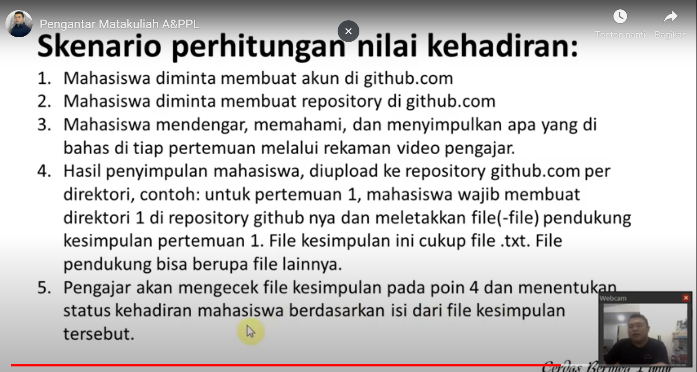

Selamat Pagi Pak
NIM: 1811500097
Nama : Livren Sandi
Kelompok: TI6A
hasil saya menyadur:
1) Ada tugas untuk menyadur tiap pertemuan dan ditaruh di github
2) Buat kelompok presentasi sebanyak 3 orang mahasiswa / kelompok
3) Pengenalan Analisa dan Perancangan Perangkat Lunak
